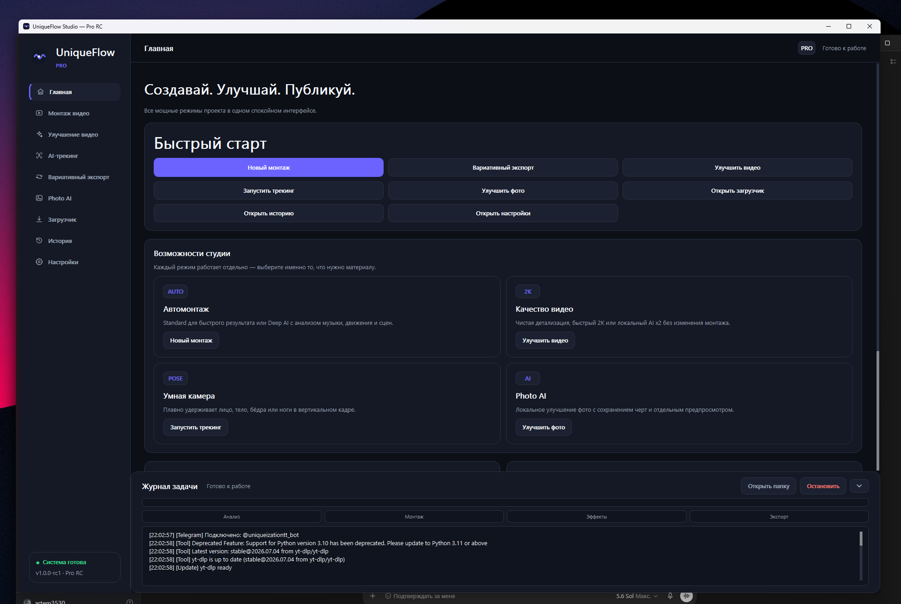

DEEP AI
Мультикамера
Два героя — один ритм
Смена фрагментов, акценты и динамика под музыку.
Добавьте видео и трек. UniqueFlow анализирует сцены, движение и музыку, собирает динамичный ролик и экспортирует его прямо на вашем компьютере.
Проверяем доступность оплаты…
Все примеры ниже собраны движками UniqueFlow. Включите звук и посмотрите, как склейки, движение и акценты работают вместе.
Смена фрагментов, акценты и динамика под музыку.
Чистый вертикальный монтаж без ручной нарезки.
Когда нужен готовый короткий ролик без долгой настройки.
Примеры демонстрируют возможности монтажа. Итог зависит от исходного материала, музыки и выбранного режима.
Оставьте сложную рутину редактору — вы выбираете материал и настроение.
Один ролик или несколько исходников из разных сцен.
MP4 · MOV · вертикальные и горизонтальныеUniqueFlow найдёт ритм, акценты, дропы и динамику трека.
Или оставьте оригинальный звукStandard работает быстро, Deep AI глубже анализирует материал.
1080p · Fast 2K · AI ×2Монтаж, кадрирование, улучшение качества и готовые результаты остаются в едином понятном интерфейсе.
Сопоставляет музыку, сцены и движение, выбирает фрагменты и строит монтажный план.
Быстрый, предсказуемый монтаж коротких видео с чёткими склейками под трек.
Удерживает лицо, тело, бёдра или ноги в вертикальном кадре.
Fast 2K для скорости и локальный AI ×2 для максимальной детализации.
Улучшает фотографии локально, сохраняя естественные черты и детали.
Создаёт дополнительные визуальные версии без повторного ручного монтажа.
Открывайте готовые файлы и смотрите результаты прямо в приложении.
Подключите собственный бот-токен и отправляйте задачи удалённо.
Не требуется разбираться в десятках параметров. Выберите движок или оставьте Auto Director — программа подстроится под материал.
Для ежедневных коротких роликов и быстрого результата.
Для сложного материала, сильной музыки и более выразительной режиссуры.

Основной монтаж, улучшение видео и обработка фото выполняются локально. Мы не отправляем ваши исходные медиа на собственный сервер для обработки.
Одинаковые Pro-возможности. Разница только в способе оплаты.
$6.99/ месяц
Полный Pro-доступ с автоматическим продлением до отмены.
$24.99навсегда
Бессрочная Pro-лицензия без ежемесячных списаний.
Первая активация требует интернет. Затем программа предоставляет ограниченный офлайн-период. Платёж и налоги обрабатывает Paddle.
Если продукт вам не подходит, запросите возврат в течение 14 календарных дней согласно политике возврата.
Если ответа нет — напишите в поддержку, мы поможем.
Telegram-поддержка →Для Standard и обычного 1080p подойдёт современный Windows‑ПК. Для Deep AI и AI ×2 рекомендуются 16 ГБ RAM и дискретная видеокарта.
Нет. Основная обработка выполняется локально. Интернет нужен для первой активации, проверки лицензии, обновлений и необязательной Telegram-интеграции.
Да. Добавьте отдельный трек или оставьте оригинальный звук исходного видео.
Standard быстрее и делает чёткий ритмичный монтаж. Deep AI глубже анализирует музыку, движение и сцены и подходит для более сложной режиссуры.
После подтверждения платежа появится лицензионный ключ и защищённая ссылка на установщик. Эти данные также стоит сохранить.